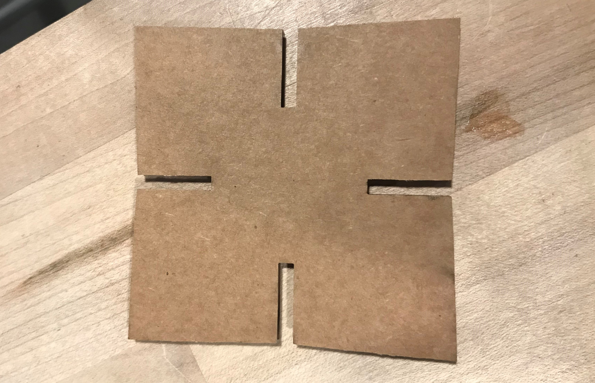
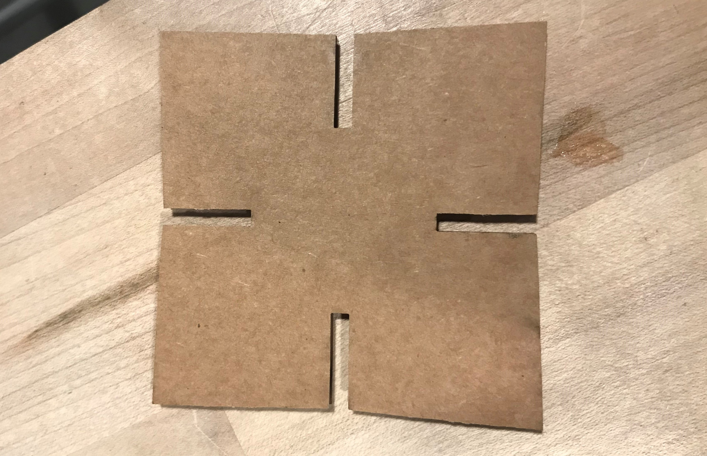

I started out with the grasshoppper model we made in class, but I wanted it to look more like a ninja star. So I added "blades" to the ends that stuck out, and added sliders to adjust the number, size, and angle of the blades. I did this by marking a point outside of the circle that I wanted the blade to reach, and then connecting that point witht the circle using lines.
I used a different cardboard for this assignment than I did in assignment 1, so I had to remeasure the thickness. Using the calipers at the MILL to measure the thickness of the cardboard, I seem to be getting a measurement of anything between 3.8mm and 4.2 mm so I decided to try printer in different sizes to see what fits best.
I started by cutting rectangles out of some scrap cardboard that were 10mm, 15mm, and 20mm tall and 3.8mm, 4mm, 4.2mm wide. I definitely cut the rectangles too close together, but I was still able to get a decent sense of what kind of slit worked best for holding the cardboard. I ended up going with 3.6mm x 20mm slits in my ninja stars.

Once I had figured out those measurements, I was able to bake my shape from grasshopper and add depth to it. I decided to start with simple, small bladed 4 slit ninja star. I made the ninja star 40mm in radius so that two full slits could fit across the star.
- Rect width: 3.6mm
- Rect height: 20mm
- Circle rad: 40mm
- Blade: 42mm
I then converted the rhino file to a .dxf file, and used a laptop at the MILL to open the .dxf file in Adobe Illustrator for cutting. I didn't need to scale the image at all, and I made sure the vectors were set to width 0.01 and color (0,0,0).
I began the laser cutting with the preferences set to 100 speed, 50 power, and 50 frequency, but that didn't cut through the cardboard all the way, so I upped it to 100 speed, 65 power, and 50 frequency, which worked very well. I started by only cutting three stars, which fit together really nicely, so I made 18 more.
 


After I made that shape, I wanted to make a fun shape, so I decided to do some smaller 7 pointed stars.
- Rect width: 3.6mm
- Rect height: 10mm
- Circle rad: 20mm
- Blade: 14mm